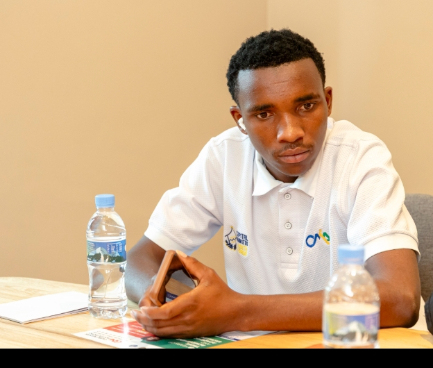

Software Development
Building useful applications and developing software solutions.

GET TO KNOW ME
Hello! I'M COMPUTER ENGINEERING student passionate about technology, software development and solving real-world problems through technology. I enjoy learning new technologies and developing digital solutions that can make people's lives easier.
My journey in technology is driven by curiosity, creativity and a strong desire to understand how computer systems and software applications work. Through my studies, I am developing knowledge in computer engineering, programming and information technology. I continuously work on improving my technical knowledge through practical projects and personal learning.
Building useful applications and developing software solutions.
Understanding how computer systems work and how software interacts with hardware.
Learning how to design, develop, test and maintain quality software.
Exploring creative ideas and designing modern digital experiences.
My ambition is to become a skilled computer Engineer capable of designing and building innovative technology solutions. I am committed to continuous learning, practical development and improving my problem-solving abilities.
I am always interested in learning, exploring new ideas and connecting with people who share a passion for technology.
Contact Me